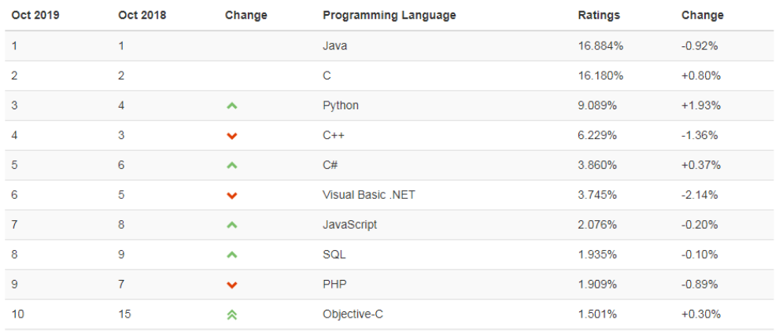
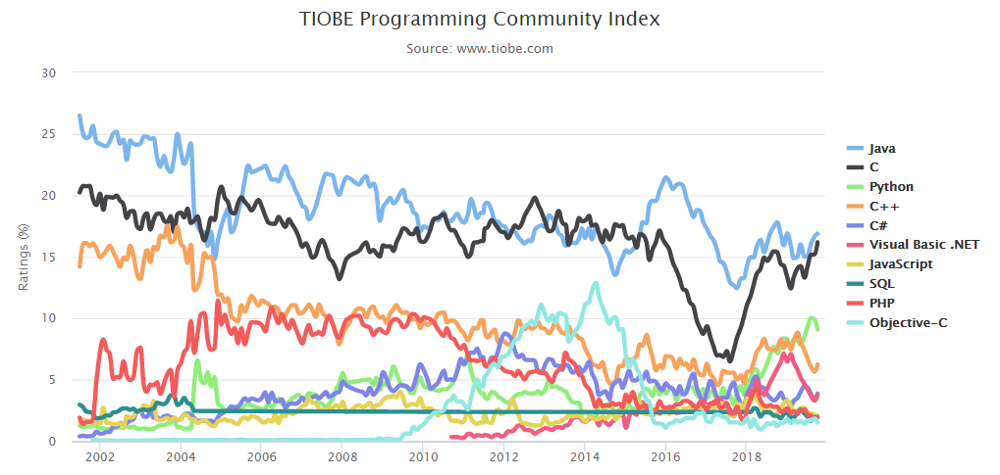

python基础
一.python介绍
python的创始人为吉多·范罗苏姆（Guido van Rossum）。1989年的圣诞节期间，吉多·范罗苏姆为了在阿姆斯特丹打发时间，决心开发一个新的脚本解释程序，作为ABC语言的一种继承。
最新的TIOBE排行榜，Python已经占据世界第四名的位置， Python崇尚优美、清晰、简单，是一个优秀并广泛使用的语言。

TOP 10 编程语言 TIOBE 指数走势（2002-2018）

由上图可见，Python整体呈上升趋势，反映出Python应用越来越广泛并且也逐渐得到业内的认可！！！
Python可以应用于众多领域，如：数据分析、组件集成、网络服务、图像处理、数值计算和科学计算等众多领域。目前业内几乎所有大中型互联网企业都在使用Python，如：Youtube、Dropbox、BT、Quora（中国知乎）、豆瓣、知乎、Google、Yahoo!、Facebook、NASA、百度、腾讯、汽车之家、美团等。
目前Python主要应用领域：
云计算: 云计算最火的语言， 典型应用OpenStack
WEB开发: 众多优秀的WEB框架，众多大型网站均为Python开发，Youtube,
Dropbox,豆瓣。。。， 典型WEB框架有Django
科学运算、人工智能: 典型库NumPy, SciPy, Matplotlib, Enthought
librarys,pandas
系统运维: 运维人员必备语言
金融：量化交易，金融分析，在金融工程领域，Python不但在用，且用的最多，而且重要性逐年提高。原因：作为动态语言的Python，语言结构清晰简单，库丰富，成熟稳定，科学计算和统计分析都很牛逼，生产效率远远高于c,c++,java,尤其擅长策略回测
图形GUI: PyQT, WxPython,TkInter
Python在一些公司的应用：
谷歌：Google App Engine 、code.google.com 、Google earth 、谷歌爬虫、Google广告等项目都在大量使用Python开发
CIA: 美国中情局网站就是用Python开发的
NASA: 美国航天局(NASA)大量使用Python进行数据分析和运算
YouTube:世界上最大的视频网站YouTube就是用Python开发的
Dropbox:美国最大的在线云存储网站，全部用Python实现，每天网站处理0亿个文件的上传和下载
Instagram:美国最大的图片分享社交网站，每天超过3千万张照片被分享，全部用python开发
Facebook:大量的基础库均通过Python实现的
Redhat: 世界上最流行的Linux发行版本中的yum包管理工具就是用python开发的
豆瓣: 公司几乎所有的业务均是通过Python开发的
知乎: 国内最大的问答社区，通过Python开发(国外Quora)
春雨医生：国内知名的在线医疗网站是用Python开发的
除上面之外，还有搜狐、金山、腾讯、盛大、网易、百度、阿里、淘宝 、土豆、新浪、果壳等公司都在使用Python完成各种各样的任务。
1.1.python是一门什么样的语言
编程语言主要从以下几个角度为进行分类，编译型和解释型、静态语言和动态语言、强类型定义语言和弱类型定义语言，我们先看编译型语言和解释型语言. 稍后再说强类型和弱类型
编译器和解释器的区别是什么？
编译器是把源程序的每一条语句句都编译成机器语言,并保存成二进制文件,这样运行时计算机
可以直接以机器语言来运行此程序,速度很快;
而解释器则是只在执行程序时,才一条一条的解释成机器语言给计算机来执行,所以运行速度是不如编译后的程序运行的快的.
这是因为计算机不能直接认识并执行我们写的语句,它只能认识机器语言(是二进制的形式)
编译型vs解释型
编译型
优点：编译器一般会有预编译的过程对代码进行优化。因为编译只做一次，运行时不需要编译，所以编译型语言的程序执行效率高。可以脱离语言环境独立运行。
缺点：编译之后如果需要修改就需要整个模块重新编译。编译的时候根据对应的运行环境生成机器码，不同的操作系统之间移植就会有问题，需要根据运行的操作系统环境编译不同的可执行文件。
解释型
优点：有良好的平台兼容性，在任何环境中都可以运行，前提是安装了解释器（虚拟机）。
灵活，修改代码的时候直接修改就可以，可以快速部署，不用停机维护。
缺点：每次运行的时候都要解释一遍，性能上不如编译型语言。
1.2.python的优缺点
优点：
1. Python的定位是“优雅”、“明确”、“简单”，所以Python程序看上去总是简单易
懂，初学者学Python，不但入门容易，而且将来深入下去，可以编写那些非常非常复杂的程序。
2. 开发效率非常高，Python有非常强大的第三方库，基本上你想通过计算机实现任何功能，Python官方库里都有相应的模块进行支持，直接下载调用后，在基础库的基础上再进行开发，大大降低开发周期，避免重复造轮子。
3. 高级语言————当你用Python语言编写程序的时候，你无需考虑诸如如何管理你的程序使用的内存⼀一类的底层细节
4. 可移植性————由于它的开源本质，Python已经被移植在许多平台上（经过改动
使它能够工 作在不同平台上）。如果你小心地避免使用依赖于系统的特性，那么你的所有Python程序无需修改就几乎可以在市场上所有的系统平台上运
5. 可扩展性————如果你需要你的一段关键代码运行得更快或者希望某些算法不公开，你可以把你的部分程序⽤用C或C++编写，然后在你的Python程序中使用它们。
6. 可嵌入性————你可以把Python嵌入你的C/C++程序，从而向你的程序用户提供脚本功能。
再看缺点：
1. 速度慢，Python 的运行速度相比C语言确实慢很多，跟JAVA相比也要慢一些，因此这也是很多所谓的大牛不屑于使用Python的主要原因，但其实这里所指的运行速度慢在大多数情况下用户是无法直接感知到的，必须借助测试工具才能体现出来，比如你用C运一个程序花0.01s,Python是0.1s,这样C语言直接比Python快了10倍,算是非常夸张，但是你是无法直接通过肉眼感知的，因为一个正常人所能感知的时间最小单位0.15-0.4s左右，哈哈。其实在大多数情况下Python已经完全可以满足你对程序速度的要求除非你要写对速度要求极高的搜索引擎等，这种情况下，当然还是建议你用C去实现的。
2. 代码不能加密，因为PYTHON是解释性语言，它的源码都是以名文形式存放的，不过我不认为这算是一个缺点，如果你的项目要求源代码必须是加密的，那你一开始就不应该用Python来去实现。
3. 线程不能利用多CPU问题，这是Python被人诟病最多的一个缺点，GIL即全局解释器锁（Global Interpreter Lock），是计算机程序设计语言解释器用于同步线程的工具，使得任何时刻仅有一个线程在执行，Python的线程是操作系统的原生线程。在Linux上为pthread，在Windows上为Win thread，完全由操作系统调度线程的执。一个python解释器进程内有一条主线程，以及多条用户程序的执行线程。即使在多核CPU平台上，由于GIL的存在，所以禁止多线程的并行执行。关于这个问题的折衷解决方法，我们在以后线程和进程章节里再进行详细探讨。
当然，Python还有一些其它的小缺点，在这就不一一列，我想说的是，任何一门语言都不是完美的，都有擅长和擅长做的事情，建议各位不要拿一个语言的劣势去跟另一个语言的优势来去比较，语言只是一个工具，是实现程序设计师思想的工具，就像我们之前中学几何时，有的时候需要圆规，有的时候需要用三角尺一样，拿相应的工具去做它最擅长的事才是正确的选择。之前很多人问我Shell和Python到底哪个好？我回答说Shell是个脚本语言，但Python不只是个脚本语言，能做的事情更多，然后又有钻牛角尖的人说完全没必要学Python, Python能做的事情Shell都可以做，只要你足够牛B,然后又举了用Shell
可以写俄罗斯方块这样的游戏，对此我能说表达只能是，不要跟SB理论，SB会把你拉到跟他一样的度，然后用充分的经验把你打倒。
1.3.python解释器
当我们编写Python代码时，我们得到的是一个包含Python代码的以.py为扩展名的文本文件。要运行代码，就需要Python解释器去执.py文件。由于整个Python语言从规范到解释器都是开源的，所以理论上，只要水平够高，任何人都可以编写Python解释器来执行Python代码（当然难度很大）。事实上，确实存在多种Python解释器。
CPython
当我们从Python官方网站下载并安装好Python 2.7后，我们就直接获得了一个官方版本的解释器：CPython。这个解释器是用C语言开发的，所以叫CPython。在命令行下运python就是启动CPython解释器。
CPython是使用最广的Python解释器。教程的所有代码也都在CPython下执行。
IPython
IPython是基于CPython之上的一个交互式解释器，也就是说，IPython只是在交互方式上有所增强，但是执行Python代码的功能和CPython是完全一样的。好比很多国产浏览器虽然外观不同，但内核其实都是调用了IE。CPython用>>>作为提示符，而IPython用In [序号]:作为提示符。
PyPy
PyPy是另一个Python解释器，它的目标是执行速度。PyPy采用JIT技术，对Python代码进行动态编译（注意不是解释），所以可以显著提高Python代码的执行速度。绝大部分Python代码都可以在PyPy下运行，但是PyPy和CPython有一些是不同的，这就导致相同的Python代码在两种解释器下执行可能会有不同的结果。如果你的代码要放到PyPy下执行，就需要了解PyPy和CPython的不同点。
Jython
Jython是运行在Java平台上的Python解释器，可以直接把Python代码编译成Java字节码执行。
IronPython
IronPython和Jython类似，只不过IronPython是运行在微软.Net平台上的Python解释器，可以直接把Python代码编译成.Net的字节码。
二.python发展史
1989年，为了打发圣诞节假期，Guido(龟叔)开始写Python语言的编译器。
Python这个名字，来自Guido所挚爱的电视剧Monty Python’s Flying Circus。他
希望这个新的叫做Python的语言，能符合他的理想：创造一种C和shell之间，功能全，易学易用，可展的语言。
1991年，第一个Python编译器诞生。它是用C语言实现的，并能够调用C语言的库文件。从一出生，Python已经具有了：类，函数，异常处理，包含表和词典在内的核心数据类型，以及模块为基础的拓展系统。
框架的基础
三.python的安装
一路确定即可. 记得path下打钩，（环境变量）
下载地址：Python官网：https://www.python.org/
四. 第一个python程序
python程序有两种编写方式:
1. 进入cmd控制台. 输入python进入编辑模式. 这时候我们可以直接编写python程序，既配置好环境变量才能执行。
2. 也可以在.py文件中编写python代码. 通过python命令来执行python代码
注意: python2中的中文编码会有问题. Python2使用的是ASCII码编码. 处理不中文. 我们需要替换成utf-8编码.
# -*- encoding:utf-8 -*-
五. 变量
变量：将运算的中间结果暂存到内存,以便便后续程序调用.
a = ‘YJ同心’ 这里的a就是一个变量. 临时记录一个值. 供后面的程序继续使用执行, 执行顺序. 把等号右边的值赋值给等号左边的变量,变量是指会变的量。
变量的命名规则:
1, 变量由字母, 数字,下划线搭配组合而成
2, 不可以数字开头,更不能是全数字
3,不能是pythond的关键字, 这些符号和字母已经被python占用, 不可以更改
4,不要用中文
5,名字要有意义
6,不要太长
7, 区分大写
推荐大家使用驼峰体或者下划线命名
驼峰体: YongJie除首字母外的其他每个单词首字母大写
下划线:yong _ jie 每个单词之间用下划线分开
六.常量
在python中不存在绝对的常量. 约定俗成, 所有字母大写就是常量
例如: PI = 3.141592653
BIRTH_OF_SYLAR = 1990
七.注释
有时候我们写的东西不一定都是给用户看的. 或者不希望解释器执行. 那我们可以使用#来注释掉代码. 被注释的内容是不会执行的.可以方便后面的程序员来拜读你的代码
单行注释: # 被注释的内容
多行注释:''' 被注释的内容 ''', """这个也是多行注释"""
八.python的基本数据类型
什么是数据类型？
我们人类可以很容易的分清数字与字符的区别，但是计算机并不能呀，计算机虽然很强大，但从某种角 度上看又很傻，除非你明确的告诉它，1是数字，“汉”是文字，否则它是分不清1和‘汉’的区别的，因此，在每个编程语言里都会有一个叫数据类型的东东，其实就是对常用的各种数据类型进行了明确的划分，你想让计算机进行数值运算，你就传数字给它，你想让他处理文字，就传字符串类型给他。Python中常用的数据类型有多种，今天我们暂只讲3种， 数字、字符串、布尔类型(命题).
8.1 整数(int)
常见的数字都是int类型.用于计算或者大小的比较
在32位机器上int的范围是: -2**31～2**31-1，即-2147483648～2147483647
在64位机器上int的范围是: -2**63～2**63-1，即-9223372036854775808~9223372036854775807够你用了吧. 注意这些是整数.
8.2 字符串 (str)
在Python中,凡是用引号引起来的,全是字符串
字符串可以用单引号，双引号，或者三引号引起来，没有什么区别，只是一些特殊的格式需要不用的引号比如：
msg = "My name is Feng Yongjie, 19 years old"
这个就需要单双引号或单引号配合。
content = """
内容
"""
想多行赋值一个字符串，就需要三引号。
数字类型有 +-*/ 字符串有么？
字符串只有 + *
字符串的拼接
1 s1 = 'a '
2
3 s2 = 'bc'
4
5 print(s1 + s2)相乘 str*int
1 name = 'YJ加油' 2 print(name*8)
8.3 布尔值(bool), 真或者假, True和False
九.用户交互
使用input()函数,可以让我们和计算机互动起来
语法: 变量 = input("提示语")
1 content = input("你叫什么名字?")
2
3 print("我们在控制台接收到了:"+content)这里可以直接获取到用户输入的内容
十.流程控制if语句
你在生活中是不是经常遇到各种选择，比如玩色子，猜大小，比如选择走那条路回家？Python程序中也会遇到这种情况，这就用到了if语句。
第一种语法:
if 条件: #引号是将条件与结果分开。
结果1。 # 四个空格，或者一个tab键，这个是告诉程序满足这个条件的
结果2。
如果条件是真(True) 执行结果1, 然后结果2, 如果条件假(False) 直接结果2
第二种语法:
If 条件:
结果1
else:
结果2
代码3
第三种语法:
If 条件1:
结果1
elif 条件2:
结果2
..
else:
结果n
第四种语法(嵌套):
If 条件1:
结果1
If 条件2:
结果2
else:
结果3
else:
结果4
可以无限的嵌套. 但是在实际开发中. 尽量不要超过三层嵌套。
补充1:in和not in
可以判断xxx字符串是否出现在xxxxx字符串中
1 content = input("请输入你的评论")
2
3 if "YJ是最牛逼的程序员" in content or 'YJ是世界第一' in content:
4
5 print('你输入的内容不合法')
6
7 else:
8
9 print("评论成功")
十一. 流程控制-while循环
while 条件:
循环体
else: 循环在正常情况跳出之后会执行这里
1 a = 1
2
3 while a < 11:
4
5 if a == 8:
6
7 break
8
9 pass
10
11 else:
12
13 print(a)
14
15 a = a+1
16
17 else:
18
19 print("你好")
注意: 如果循环是通过break退出的,那么while后面的else将不会被执行, 只有在while条件判断是假的时候才会执行这个else
pass: 不表示任何内容. 为了代码的完整性. 占位而已
在生活中，我们遇到过循环的事情吧？比如循环听歌。在程序中，也是存才的，这就是流程空语句while。
模拟一下循环听歌：
1 while True:
2
3 print('我们不一样')
4
5 print('我们都⼀样')
6
7 print('有啥不一样')如果条件是真, 则直接执结果. 然后再次判断条件. 直到条件是假. 停止循环那我们怎么终止循环呢？
结束循环:
1, 改变条件
2, break
十二. 流程控制-break和continue
1, break: 立刻跳出循环. 打断的意思
2, continue: 停止本次循环, 继续执行下一次循环.
2019年11月1日